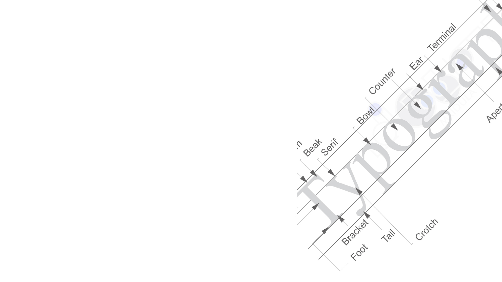
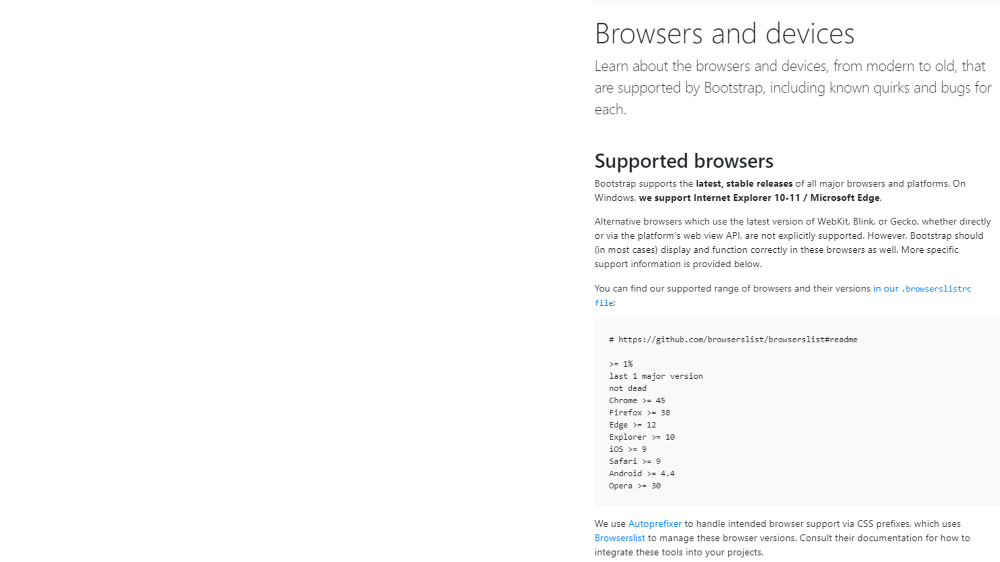

Тебе не нужен Bootstrap! Или нужен? Или все же не нужен?
Тебе не нужен Bootstrap!
Или нужен? Или все же не нужен?
Александра Шинкевич
@neesoglasnaja

О чем расскажу
- Что такое Bootstrap
- Плюсы и минусы UI библиотек
- Как сделать свой Bootstrap

Bootstrap - это...
- Библиотека компонентов
- CSS фреймворк
- UI библиотека
Почему Bootstrap
- Просто, быстро и удобно копипастить
- Большой набор базовых компонентов
- Выглядит презентабельно из коробки
- Только HTML, CSS и JavaScript (jQuery)

Версии для JS фреймворков...
...полностью переписаны!
Мой первый сайт на Bootstrap 2
2013
http://3d.miu.by/
Что в нем хорошо
- Типографика
- Cемантика и a11y
- Grid system
- Responsive Web Design и Mobile First
- Расширенная кроссбраузерность
Типографика
Простой кит по заголовкам и тексту

Как применить?
- Сделать UI Kit со стилями типографики

- Типографика - основа стиля сайта
Семантика
- Не говорит использовать section или article
- Но и не запрещает, так как стили на классах

a11y
- Базовые требования a11y
- Присутствуют aria и role

Как применить?
- Задумываться о семантике и a11y
- Верстать семантично
- Проверять базовое a11y
Grid system
Модульные сетки = визуальный порядок

Как применить?
- Рассказать дизайнеру о сетках
- Начать использовать CSS Grid Layout
RWD и MF
*Responsive Web Design и Mobile First

Mobile First и Desktop First
// Mobile First
@media (min-width: ...) { ... }
@media (min-height: ...) { ... }
// Desktop First
@media (max-width: ...) { ... }
@media (max-height: ...) { ... }
Как применить?
- Начни делать Mobile First!
- Мобильные - это важно!
- Я серьезно, и дизанейру своем скажи!
Кроссбраузерность
- Браузер - неконтролируемая среда
- Чем сложнее код, тем больше ошибок

Что в нем плохо
- Проблемы большого опенсорса
- Сложность кастомизации
- Отсутствие методологии наименования
- Зависимость от jQuery

Проблемы большого опенсорса
- Унификация
- Инертность
- Отставание от стандартов
Сложность кастомизации
- Есть Sass переменные
- В CSS нет изоляции стилей -> каскад и !important
неправильная кастомизация -> ненужные зависимости
Не надо так!
Следите за зависимостями, используйте для этого инструменты
Отстутсвие методологии наименования
Отстутсвие методологии -> каша в селекторах
классы-модификаторы / утилитарные классы
Плохой дизайн сложно превратить в хороший CSS фреймворк

Без UI Kit...

...всё будет ОЧЕНЬ ПЛОХО

Из чего состоит Oopstrap
- Код рабочего проекта
- Документация
Проект состоит из...
- Настроек проекта
- Глобальных стилей, переменных
- Grid system
- Типографики и стилей контента
- Компонентов
DRY

custom properties
Более мощный инструмент, чем переменные препроцессоров
р Имеет каскадность и фоллбек
Классный кейс - адаптивные элементы UI kit
Запрет на анархию в переменных
"It's allowed to use only \"var(--var)\" for different color (--color-NAME); font (--font-family-NAME, --font-size-NAME); line height (--line-height-NAME); border radius (--border-radius-NAME); and shadows (--shadow-NAME) props. You CAN use 'inherit' for colors, font-size, font-family and line-height. You CAN use 'none' for border-radius and shadows"
И нет, переменные это не про то, чтобы не копипастить код
Основная задача переменных - контроль над стилями "темы"
Эра flex
Нужен только класс-контейнер (и то не всегда)
Высчитывать все эти колонки, остпуты... Долго и неинтересно!
css grid
Создание сетки в несколько строк
р Подержка браузеров позволяет использовать в проде https://caniuse.com/#feat=css-grid
css grid
Пример с 12 колонками в несколько строк
Вот и не нужен подход с atomicCSS, когда стили пишутся классами в разметке
А еще гриды умеют в адаптив (пример как)
Типографика и контент
Воруй как художник, если дизайнер это еще не сделал за тебя
Тулзы для подбора типографики
Можно и вертикальный ритм подключить, это не сложно
responsive images
В Bootstrap есть поддержка тега picture - это круто
Но ничего не говорится от src-set, т.е. об адаптивных изображениях
р А это классная техника уменьшения трафика пользователя
Компоненты
Неужто сложно наверстать такие компоненты как...
Alerts, Badges, Buttons, Progress, Spinners и еще несколько десятков такой же ерунды?
А что про JS компоненты?
Камон, ну что мало ли каруселек без jQuery, с a11y?
В редких проектах нужнен весь список доступных JS компонентов Bootstrap
А если и так, то они часто выглядят отнюдь не так, как в популярном фреймворке
dialog
р Полноценные модальный элемент
Пока сложно использовать из-за низкой поддержки https://caniuse.com/#feat=dialog
р Доклад Ани Селезневой https://www.youtube.com/watch?v=s6PI8pKQxgo
Утилитарные класы
Ресеты стилей
Простой повторяющийся код вынесен в переменные еще несколько этапов назад
Большинству проектов достаточно парочки таких классов как visibility-hidden, display-none и т.д.
А остальное - в утиль. Вот серьезно, зачему 20 классов border, если граница задается один свойством?!
Вуаля!
- CSS библиотека, заточенная под конкретный проект
- Со встроенной документацией
- С конкретными примерами компонентов конкретного проекта
- Сторонние библиотеки не запрещены
Когда брать чужое?
- Разрабатывается быстрый прототип
- Дизайн "заточен" под выбранную UI библиотеку
- Нет дизайна
- Вы не умеете верстать
- Просто лень
Подводя итог
- Хватит ненавидеть библиотеки "потому что модно"
- Пользуйся инструментами осознанно
- Знай возможности современных CSS, HTML и JS
Подводя итог
- Хватит ненавидеть библиотеки "потому что модно"
- Пользуйся инструментами осознанно
- Знай возможности современных CSS, HTML и JS
- Не переставай учиться